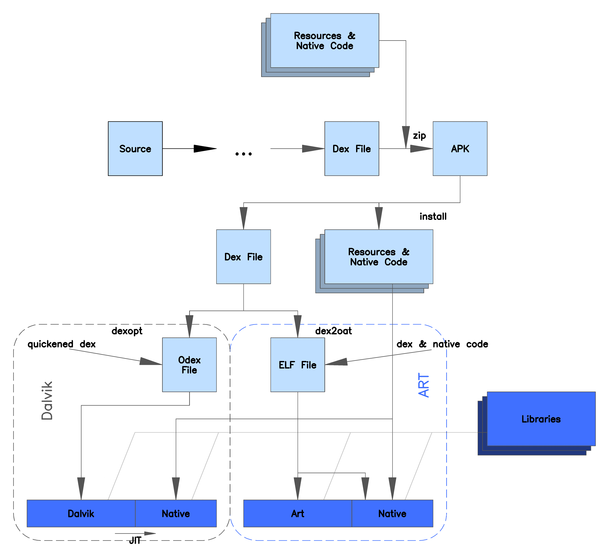

文件格式
apk
APK(Android package)：android安装包，由aapt（Android Assert Packaging Tool）把AndroidManifest.xml、资源文件、dex（二进制字节码）文件组合而成。
dex
dex（Dalvik VM Excutors）：Dalvik虚拟机执行程序，执行前需要优化。
vdex
android O 新增的格式包，dex代码直接转化的可执行二进制码文件：
- 第一次开机就会生成在
/system/app/<packagename>/oat/下； - 在系统运行过程中，虚拟机将其 从
/system/app下 copy 到/data/davilk-cache/下
目的是为了降低dex2oat时间，进行dex2oat时，如果有vdex的话，就可以省去重新校验apk里dex文件合法性的过程，从而优化了开机速度。
odex
在Android N 之前，Dalvik虚拟机执行程序dex文件前，系统会对dex文件做优化，生成可执行文件odex，保存到/data/dalvik-cache目录，最后把apk文件中的dex文件删除。其优点是：
- 减少了启动时间（省去了系统第一次启动应用时从apk文件中读取dex文件，并对dex文件做优化的过程）和对RAM的占用（apk文件中的dex如果不删除，同一个应用就会存在两个dex文件：apk中和/data/dalvik-cache目录下）。
- 防止第三方用户反编译系统的软件（odex文件是跟随系统环境变化的，改变环境会无法运行；而apk文件中又不包含dex文件，无法独立运行）。
在Android O 之后，odex 是从vdex 这个文件中提取了部分模块生成的一个新的可执行二进制码文件，odex 从vdex 中提取后，vdex 的大小就减少了。
- 第一次开机就会生成在
/system/app/<packagename>/oat/下； - 在系统运行过程中，虚拟机将其 从
/system/app下 copy 到/data/davilk-cache/下； - odex + vdex = apk 的全部源码 （vdex 并不是独立于odex 的文件 odex + vdex 才代表一个apk）。
oat
ART虚拟机使用的是oat文件，oat文件是一种Android私有ELF文件格式，它遵循ELF格式，ELF是Unix系统上可执行文件，目标文件，共享库和Core dump文件的标准格式，全称是Executable and Linkable Format。
oat文件不仅包含有从DEX文件翻译而来的本地机器指令，还包含有原来的DEX文件内容。APK在安装的过程中，会通过dex2oat工具生成一个OAT文件。
art
可选文件，包含APK中列出的一些字符串和类的ART内部表示，用于加速应用程序的启动。
QA
Android 5.0开始，默认已经使用ART，弃用Dalvik了，app会在安装时被编译成OAT文件，（ART上运行的格式）ODEX还有什么用呢？ Google权威的回答：
- DEX转换成OAT的这个过程是5.0以上系统用户在安装程序或是刷入ROM、增量更新后首次启动时必然执行的。按照Google的说法，相比做过ODEX优化，未做过优化的DEX转换成OAT要花费更长的时间，比如2-3倍。比如安装一个odex优化过的程序假设需要1秒钟，未做过优化的程序就需要2~3秒。由此可见，虽然dalvik被弃用了，但ODEX优化在Android 5.0系统以上依旧起着作用。ODEX优化事实上是由一个叫做WITH_DEXPREOPT的参数控制的，开启该参数后，会对APK、JAR以及内核镜像进行优化。其中，针对APK和JAR的最直观的优化体现就是，程序的dex被转换成odex。
DVM vs ART
Dalvik虚拟机是2008年跟随Android系统一起发布的。当时的移动设备的系统内存只有64M左右，CPU频率在250~500MHz之间。这个硬件水平早已发生了巨大变化。随着智能设备的兴起，这些年移动芯片的性能每年都有大幅提升，如今的智能手机内存已经有8G甚至更多，CPU也已经步入了64位的时代，频率高达2.0 GHz甚至更高。硬件的更新，常常也伴随着软件的换代。因此，Dalvik虚拟机被淘汰也是情理之中的事情。
Dalvik之所以要被ART替代包含下面几个原因：
- Dalvik是为32位设计的，不适用于64位CPU。
- 单纯的字节码解释加JIT编译的执行方式，性能要弱于本地机器码的执行。
- 无论是解释执行还是JIT编译都是单次运行过程中发生，每运行一次都可能需要重新做这些工作，这样做太浪费资源。
- 原先的垃圾回收机制不够好，会导致卡顿。
很显然，ART虚拟机对上面提到的这些地方做了改进。除了支持64位不必说，最主要的是下面两项改进：
- AOT编译
- 垃圾回收的改进：GC（Garbage Collection）是虚拟机非常重要的一个特性，因为它的实现好坏会影响所有在虚拟机上运行的应用。GC实现得不好可能会导致画面跳跃，掉帧，UI响应过慢等问题。ART的垃圾回收机制相较于Dalvik虚拟机有如下改进：
- 将GC的停顿由2次改成1次
- 在仅有一次的GC停顿中进行并行处理
- 在特殊场景下，对于近期创建的具有较短生命的对象消耗更少的时间进行垃圾回收
- 改进垃圾收集的工效，更频繁的执行并行垃圾收集
- 对于后台进程的内存在垃圾回收过程进行压缩以解决碎片化的问题
- AOT编译是在应用程序安装时就进行的工作，下图描述了Dalvik虚拟机与（Android 5.0上的）ART虚拟机在安装APK时的区别：

从这幅图中我们看到：
- 在Dalvik虚拟机上，APK中的Dex文件在安装时会被优化成odex文件，在运行时，会被JIT编译器编译成native代码。
- 而在ART虚拟机上安装时，Dex文件会直接由dex2oat工具翻译成oat格式的文件，oat文件中既包含了dex文件中原先的内容，也包含了已经编译好的native代码。
dex2oat生成的oat文件在设备上位于/data/dalvik-cache/目录下。同时，由于32位和64位的机器码有所区别，因此这个目录下还会通过子文件夹对oat文件进行分类。例如，手机上通常会有下面两个目录：
- /data/dalvik-cache/arm/
- /data/dalvik-cache/arm64/
AOT和JIT
Ahead-of-time（AOT）是相对于Just-in-time（JIT）而言的。
- JIT：在运行时进行字节码到本地机器码的编译，这也是为什么Java普遍被认为效率比C++差的原因。无论是解释器的解释还是运行过程中即时编译，都比C++编译出的本地机器码执行多了一个耗费时间的过程。
- AOT：向C++编译过程靠拢的一项技术，当APK在安装的时候，系统会通过一个名称为dex2oat的工具将APK中的dex文件编译成包含本地机器码的oat文件存放下来。这样做之后，在程序执行的时候，就可以直接使用已经编译好的机器码以加快效率。
在Android 5.0上，系统在安装APK时会直接将dex文件中的代码编译成机器码，编译的过程比较耗时，因此，用过Android 5.0的用户应该都会感觉到，在这个版本上安装应用程序明显比之前要慢了很多。编译一个应用程序已经比较耗时，如果系统中所有的应用都要重新编译一遍，那等待时间将是难以忍受的。之所以发生这个问题，是因为：
- 应用程序编译生成的OAT文件会引用Framework中的代码。一旦系统发生升级，Framework中的实现发生变化，就需要重新修正所有应用程序的OAT文件，使得它们的引用是正确的，这就需要重新编译所有的应用。
- 出于系统的安全性考虑，自2015年8月开始，Nexus设备每个月都会收到一次安全更新。
编译生成的Oat文件中，既包含了原先的Dex文件，又包含了编译后的机器代码。而实际上，对于用户来说，并非会用到应用程序中的所有功能，因此很多时候编译生成的机器码是一直用不到的。一份数据存在两份结果（尽管它们的格式是不一样的）显然是一种存储空间的浪费。
因此，为了解决上面提到的这些问题，在 Android 7.0 中，Google又为Android添加了即时 (JIT) 编译器。在APK安装时，并不是一次性将所有代码全部编译成机器码。而是在实际运行过程中，对代码进行分析，将热点代码编译成机器码，让它可以在应用运行时持续提升 Android 应用的性能。
JIT编译器补充了ART当前的预先(AOT)编译器的功能，有助于提高运行时性能，节省存储空间，以及加快应用及系统更新速度。相较于AOT编译器，JIT编译器的优势也更为明显，因为它不会在应用自动更新期间或重新编译应用（在无线下载 (OTA) 更新期间）时拖慢系统速度。